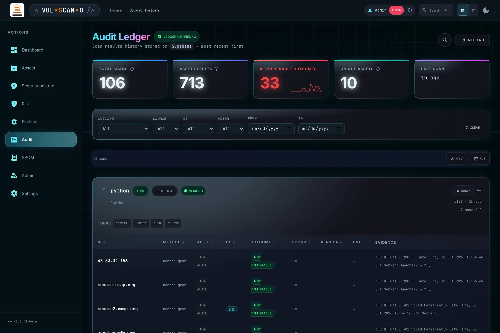
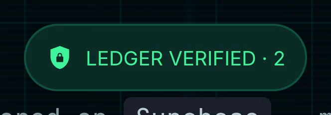
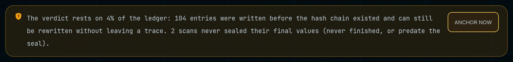
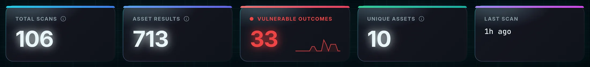
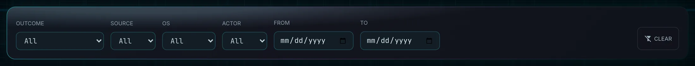
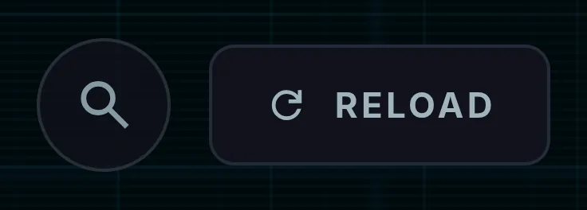
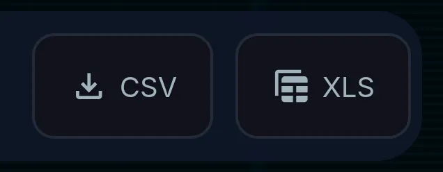
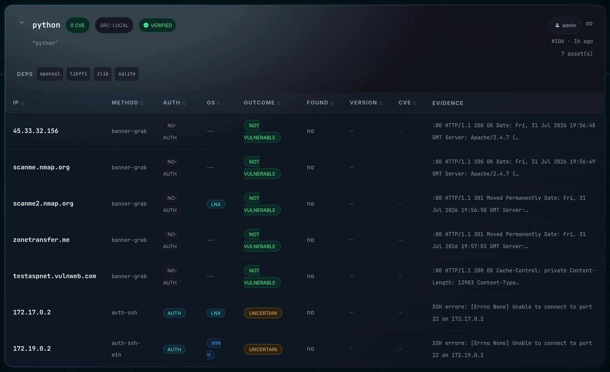

Audit LedgerRegistro di audit
Two ledgers, two tabs. SCANS is the history of every scan the application has run, most recent first. ACTIVITY is the history of everything else — who signed in, who was denied, who changed a role, a configuration key or an assignment, who exported data. Both are protected by a tamper-evident hash chain. This is the page you open when someone asks you to prove what was scanned, when, by whom — and what that person did around it.
Due registri, due schede. SCANS è lo storico di ogni scansione eseguita dall'applicazione, dalla più recente. ACTIVITY è lo storico di tutto il resto — chi ha effettuato l'accesso, a chi è stato negato, chi ha cambiato un ruolo, una chiave di configurazione o un'assegnazione, chi ha esportato dati. Entrambi sono protetti da una catena di hash a prova di manomissione. È la pagina che apri quando qualcuno ti chiede di dimostrare cosa è stato scansionato, quando, da chi — e cosa quella persona ha fatto attorno a quell'operazione.
Page OverviewPanoramica admin · manager · auditor (alltutto) · editor (own scopeproprio ambito) · viewer and stakeholder deniedviewer e stakeholder negati
The subtitle names the storage explicitly: “Scan results history stored on Supabase · most recent first.” Each entry records one scan session — the product searched, the timestamp, the actor, the resolved dependencies — and expands to the per-asset results underneath.
Il sottotitolo nomina esplicitamente lo storage: «Scan results history stored on Supabase · most recent first.» Ogni voce registra una sessione di scansione — il prodotto cercato, il timestamp, l'attore, le dipendenze risolte — ed espande sotto i risultati per asset.
Access is deliberately asymmetric: administrators, managers and auditors see the entire ledger, an
editor sees only results inside their own visibility cone, and neither a viewer nor a
stakeholder can open the page at all. Audit history is the one place where partial visibility would
be actively misleading, so those two roles are excluded rather than shown a filtered version — and the ledger
records actor_name, which is not theirs to read.
The auditor role exists for this page. It reads the whole ledger and exports signed evidence, but writes nothing anywhere in the product — no scans, no imports, no status changes. Before it existed, anyone who needed the audit history had to be given manager, which also grants all of those; a CISO, a compliance officer or an external auditor now gets read access without the authority to change what they are auditing.
L'accesso è volutamente asimmetrico: amministratori, manager e auditor vedono l'intero registro, un
editor vede solo i risultati del proprio cono di visibilità e né un viewer né uno
stakeholder possono aprire la pagina. Lo storico di audit è l'unico posto in cui una visibilità
parziale sarebbe attivamente fuorviante, quindi questi due ruoli vengono esclusi invece che ricevere una
versione filtrata — e il registro contiene actor_name, che non spetta a loro leggere.
Il ruolo auditor esiste per questa pagina. Legge l'intero registro ed esporta l'evidenza firmata, ma non scrive nulla in nessun punto del prodotto — niente scansioni, niente import, niente cambi di stato. Prima che esistesse, chiunque avesse bisogno dello storico di audit doveva ricevere manager, che concede anche tutto il resto; un CISO, un compliance officer o un auditor esterno ottiene ora l'accesso in lettura senza il potere di modificare ciò che sta verificando.

Tamper-evident integrityIntegrità a prova di manomissione

GET /api/audit/verify. Here it reports partial coverage: the percentage is the share of the
ledger the verdict actually rests on.
Il badge di integrità — la prima cosa da leggere in questa pagina, verificato tramite
GET /api/audit/verify. Qui riporta una copertura parziale: la percentuale è la quota di
registro su cui il verdetto si regge davvero.
How It WorksCome funziona
Each ledger entry hashes its own content together with the previous entry's hash. That chains the history: altering or deleting a row anywhere invalidates every entry after it, and the mismatch is detectable without needing a separate copy of the data. Verification runs on page load and reports across the whole chain, plus per-entry.
Ogni voce del registro calcola l'hash del proprio contenuto insieme all'hash della voce precedente. Questo concatena lo storico: alterare o eliminare una riga in qualsiasi punto invalida tutte le voci successive, e la discrepanza è rilevabile senza bisogno di una copia separata dei dati. La verifica parte al caricamento della pagina e riporta sia il risultato complessivo sia quello per voce.
Verification covers two levels. The first hash is computed when the entry is created, so it can
only cover the fields already known then — description, product, source, actor. The number of CVEs is
written at the end of the run and therefore gets a second hash of its own
(final_hash), anchored to the first and sealed once per scan. This matters in an audit: the CVE
count is exactly the figure that gets challenged, and without the seal it would have been the one number nobody
could prove. Editing it directly in the database now breaks verification like any other field. Scans that
predate the seal, or that never finished, are reported as pending — not as a breach.
La verifica copre due livelli. Il primo hash è calcolato alla creazione della voce, quindi può
coprire solo i campi già noti in quel momento — descrizione, prodotto, sorgente, attore. Il numero di
CVE viene scritto a fine run e riceve quindi un secondo hash proprio
(final_hash), ancorato al primo e sigillato una sola volta per scansione. In un audit questo è
decisivo: il conteggio CVE è esattamente la cifra che viene contestata, e senza il sigillo sarebbe stato
l'unico numero non dimostrabile. Modificarlo direttamente a database ora rompe la verifica come qualsiasi
altro campo. Le scansioni precedenti al sigillo, o mai concluse, sono riportate come pending — non
come una violazione.
The ledger proves what was run and by whom. To prove instead how many vulnerabilities were open on
a given date and how many were closed since, use the point-in-time evidence built on the finding
lifecycle ledger: see Audit evidence and
GET /api/findings/as-of.
Il registro dimostra cosa è stato eseguito e da chi. Per dimostrare invece quante vulnerabilità
erano aperte a una certa data e quante ne sono state chiuse da allora, usa l'evidenza point-in-time
costruita sul registro del ciclo di vita dei finding: vedi Evidenza per
audit e GET /api/findings/as-of.
Nothing on this page can be edited back. The ledger tables are append-only at database level: triggers reject every rewrite and deletion, and the corresponding privileges are revoked from the roles the application uses. The only write still permitted is the end-of-scan one that fills in the final values — and only until they are sealed. A TAMPERED badge therefore means someone reached the database directly, not that the application misbehaved.
Niente di ciò che vedi in questa pagina può essere corretto a posteriori. Le tabelle di registro sono append-only a livello database: i trigger rifiutano ogni riscrittura e cancellazione, e i permessi corrispondenti sono revocati ai ruoli usati dall'applicazione. L'unica scrittura ancora consentita è quella di fine scansione che riempie i valori definitivi — e solo finché non sono sigillati. Un badge TAMPERED significa quindi che qualcuno è arrivato direttamente al database, non che l'applicazione abbia sbagliato.
What the verdict rests onSu cosa si regge il verdetto
A verification that answers “ok” while checking a fraction of the rows is worse than no verification. The badge therefore reports a verdict and the coverage behind it, not merely the absence of detected failures:
Una verifica che risponde «ok» controllando una frazione delle righe è peggio di nessuna verifica. Il badge riporta quindi un verdetto e la copertura che lo sostiene, non semplicemente l'assenza di errori rilevati:
| VerdictVerdetto | MeaningSignificato |
|---|---|
| LEDGER VERIFIED | Every entry is verified or anchored and every sealed value checks out. This is the only state that means the ledger is intact.Ogni voce è verificata o ancorata e ogni valore sigillato torna. È l'unico stato che significa il registro è integro. |
| PARTIAL COVERAGE · n% | Nothing is broken, but part of the ledger cannot be proven: entries written before the hash chains existed, or scans whose final values were never sealed. The percentage is the share of the ledger the verdict actually rests on, and a line under the toolbar says how many entries are still freely rewritable.Niente è rotto, ma una parte del registro non è dimostrabile: voci scritte prima che esistessero le catene hash, o scansioni i cui valori finali non sono mai stati sigillati. La percentuale è la quota di registro su cui il verdetto si regge davvero, e una riga sotto la toolbar dice quante voci restano liberamente riscrivibili. |
| TAMPERED | At least one entry does not match its hash, or an anchored entry was changed after being anchored. This is an incident, not a limitation — investigate before using the ledger as evidence.Almeno una voce non corrisponde al proprio hash, oppure una voce ancorata è stata modificata dopo l'ancoraggio. È un incidente, non un limite — indaga prima di usare il registro come evidenza. |
ok: true
whenever nothing it could check had failed — on a real installation that meant declaring intact a ledger
where 104 entries out of 108 were skipped and rewritable, and the response said so nowhere. The posture
ledger, which holds the point-in-time vulnerability counts, was unsigned at 100% and still answered
ok: true.
Prima diceva un'altra cosa. Fino a poco tempo fa l'endpoint rispondeva
ok: true ogni volta che nulla di ciò che poteva controllare era fallito — su un'installazione
reale significava dichiarare integro un registro in cui 104 voci su 108 erano saltate e riscrivibili, e la
risposta non lo diceva da nessuna parte. Il registro di postura, che regge i conteggi point-in-time delle
vulnerabilità, era non firmato al 100% e rispondeva comunque ok: true.

Two things a chain cannot see by itselfDue cose che una catena non vede da sola
A hash chain proves that an entry was not modified. It says nothing about an entry that is
no longer there, and nothing about one whose hash was simply erased. Both
were exploitable without breaking a single link: delete the most recent entries and what remains is a shorter
chain in which every link still matches; empty the hash columns of an entry and it becomes
indistinguishable from one written before the chain existed, so verification skipped it. In both cases the
old answer was ok: true.
Una catena di hash dimostra che una voce non è stata modificata. Non dice nulla di una voce che
non c'è più, né di una a cui l'hash è stato semplicemente cancellato.
Entrambe le cose erano sfruttabili senza rompere un solo collegamento: cancella le voci più recenti e quello
che resta è una catena più corta in cui ogni collegamento torna; svuota le colonne hash di una voce e diventa
indistinguibile da una scritta prima che la catena esistesse, quindi la verifica la saltava. In tutti e due i
casi la risposta era ok: true.
| DefenceDifesa | What it catchesCosa intercetta |
|---|---|
| Position of the unsigned entriesPosizione delle voci non firmate | Entries without a hash are the ones from before the chain, and they are all at the beginning. One appearing after a signed entry had its hash stripped: it is reported as tampering, with the offending entry numbers. Needs nothing but the database.Le voci senza hash sono quelle precedenti alla catena, e stanno tutte all'inizio. Una che compare dopo una voce firmata ha subito la rimozione dell'hash: viene segnalata come manomissione, con i numeri delle voci coinvolte. Non richiede nient'altro che il database. |
| Witness outside the databaseTestimone fuori dal database | After every write the application records, on its own host, where each ledger ended: last entry, how many there were, how many were signed. Fewer entries than recorded, or signed entries that are no longer signed, is a truncation — the thing a chain read forward from the start can never notice.Dopo ogni scrittura l'applicazione annota, sul proprio host, dove finiva ciascun registro: ultima voce, quante erano, quante firmate. Meno voci di quelle registrate, o voci firmate che non lo sono più, sono un troncamento — proprio ciò che una catena percorsa in avanti dall'inizio non può notare. |
Until that witness exists the tail is not verifiable, and the verdict stays PARTIAL COVERAGE rather than claiming intact. The same administrator action that anchors the old entries also establishes it.
Finché quel testimone non esiste la coda non è verificabile, e il verdetto resta COPERTURA PARZIALE invece di dichiarare l'integrità. La stessa azione dell'amministratore che ancora le voci vecchie lo stabilisce.
Anchoring the entries that came beforeAncorare le voci precedenti
Entries written before the hash chains existed cannot be signed retroactively: nobody can prove they were not already altered, and signing them now would be manufacturing evidence. They can be anchored. Anchoring records the current digest of those entries in a signed, chained row, so from that moment any change to them is detectable — a change to an anchored entry turns the verdict to TAMPERED, exactly like a broken signature.
Le voci scritte prima che esistessero le catene hash non si possono firmare a posteriori: nessuno può dimostrare che non siano già state alterate, e firmarle ora significherebbe fabbricare una prova. Si possono ancorare. L'ancoraggio registra il digest attuale di quelle voci in una riga firmata e concatenata, così da quel momento ogni loro modifica è rilevabile — una modifica a una voce ancorata porta il verdetto a TAMPERED, esattamente come una firma rotta.
When there are unprotected entries, an ANCHOR NOW button appears next to the coverage line — for administrators only. Not even an auditor can press it: an auditor reads the evidence, and does not create it. The action is deliberately manual and is recorded in the activity ledger with the name of whoever performed it.
Quando ci sono voci non protette, accanto alla riga di copertura compare un pulsante ANCORA ORA — solo per gli amministratori. Nemmeno un auditor può premerlo: un auditor legge le prove, non le crea. L'azione è volutamente manuale e viene registrata nel registro attività con il nome di chi l'ha eseguita.
Features BreakdownDettaglio funzionalità
| IndicatorIndicatore | MeaningSignificato |
|---|---|
| CHECKING… | Verification in progress.Verifica in corso. |
| LEDGER VERIFIED · n | The whole chain re-hashes correctly across n entries. This is the state you want.L'intera catena si ricalcola correttamente su n voci. È lo stato desiderato. |
| TAMPERED · n | A hash mismatch was found — an entry, or the chain before it, was altered.È stata trovata una discrepanza di hash — una voce, o la catena che la precede, è stata alterata. |
| LEGACY (UNSIGNED) | Entries recorded before the tamper-evident ledger existed. They cannot be verified, only trusted.Voci registrate prima dell'esistenza del registro a prova di manomissione. Non possono essere verificate, solo accettate per fiducia. |
| EMPTY LEDGER / INTEGRITY N/A | Nothing to verify yet, or verification unavailable.Nulla da verificare, oppure verifica non disponibile. |
| Per-entry badgeBadge per voce | Tooltip |
|---|---|
| VERIFIED | “Hash chain intact: this entry has not been altered.” |
| TAMPERED | “Hash mismatch: this entry or the chain before it was altered.” |
| UNSIGNED | “Legacy entry recorded before the tamper-evident ledger.” |
1Actor attributionAttribuzione dell'attore
Every entry records who ran the scan and displays it as “Run by …”. When no actor was recorded — typically for scheduled or pre-authentication runs — the entry shows SYSTEM with the tooltip “No actor recorded for this scan.” Actor is also a filter facet, which is what makes the page usable during an investigation.
Ogni voce registra chi ha eseguito la scansione e lo mostra come «Run by …». Quando non è stato registrato alcun attore — tipicamente per run pianificate o precedenti all'autenticazione — la voce mostra SYSTEM con il tooltip «No actor recorded for this scan.» L'attore è anche una faccetta di filtro, ed è ciò che rende la pagina utilizzabile durante un'indagine.
KPI stripStriscia KPI

| KPI | DefinitionDefinizione |
|---|---|
| TOTAL SCANS | Distinct scan sessions matching the current filter.Sessioni di scansione distinte che corrispondono al filtro corrente. |
| ASSET RESULTS | One entry per asset per scan — vulnerable and clean outcomes alike.Una voce per asset per scansione — esiti vulnerabili e puliti allo stesso modo. |
| VULNERABLE OUTCOMES | Results that came back vulnerable, accompanied by a sparkline of the trend.Risultati tornati vulnerabili, accompagnati da uno sparkline della tendenza. |
| UNIQUE ASSETS | Distinct IP addresses seen across the filtered scans.Indirizzi IP distinti visti nelle scansioni filtrate. |
| LAST SCAN | Relative time of the most recent entry — just now, {n}m ago, {n}h ago, {n}d ago — with the exact timestamp in the tooltip.Tempo relativo della voce più recente — just now, {n}m ago, {n}h ago, {n}d ago — con il timestamp esatto nel tooltip. |
Filters, search and exportFiltri, ricerca ed export

| ControlControllo | BehaviourComportamento |
|---|---|
| OUTCOME | Vulnerable, not vulnerable, or uncertain.Vulnerabile, non vulnerabile o incerto. |
| SOURCE | The detection method — banner grab, authenticated, simulated, deep probe.Il metodo di rilevamento — banner grab, autenticato, simulato, deep probe. |
| OS | Operating system of the scanned asset.Sistema operativo dell'asset scansionato. |
| ACTOR | Who ran the scan — a faceted list built from the ledger itself, so it only ever offers actors that actually appear.Chi ha eseguito la scansione — un elenco a faccette costruito dal registro stesso, quindi propone solo attori realmente presenti. |
| FROM / TO | Date pickers bounding the period.Selettori di data che delimitano il periodo. |
| CLEAR | Resets every filter at once.Azzera tutti i filtri in una volta. |
| Status lineRiga di stato | “{n} scans”, with the word filtered appended whenever filters are active — so a small number never looks like a small ledger.«{n} scans», con la parola filtered aggiunta quando ci sono filtri attivi — così un numero piccolo non sembra mai un registro piccolo. |


Pagination and faceting are performed server-side by GET /api/audit, so a ledger
with tens of thousands of entries stays responsive and the facets always reflect the whole dataset rather than
the page you happen to be on.
Paginazione e faccette sono gestite lato server da GET /api/audit, così un
registro con decine di migliaia di voci resta reattivo e le faccette riflettono sempre l'intero dataset invece
della pagina che stai guardando.
Scan entriesVoci di scansione

Features BreakdownDettaglio funzionalità
| ElementElemento | Content and behaviourContenuto e comportamento |
|---|---|
| Entry headerIntestazione voce | Product and version searched, timestamp, asset count, integrity badge and actor. Click it — or the chevron — to expand and collapse; the control carries aria-expanded and the label “Toggle scan details”.Prodotto e versione cercati, timestamp, numero di asset, badge di integrità e attore. Cliccala — o clicca il chevron — per espandere e comprimere; il controllo ha aria-expanded ed etichetta «Toggle scan details». |
| Copy linkCopia link | Copies a direct link to that specific scan — paste it into a ticket, an email or an incident report so the reader lands exactly here.Copia un link diretto a quella specifica scansione — incollalo in un ticket, in una email o in un report di incidente perché il lettore arrivi esattamente qui. |
| Result columnsColonne dei risultati | METHOD · OUTCOME · FOUND · VERSION · EVIDENCE |
| CVE listElenco CVE | Lazy-loaded per entry (loading… → the identifiers, or failed to load), truncated with “+{n} more” and “show less” so a scan with 400 CVEs does not bury the page.Caricato in modo lazy per ogni voce (loading… → gli identificativi, oppure failed to load), troncato con «+{n} more» e «show less» perché una scansione con 400 CVE non sommerga la pagina. |
| DEPS | The runtime dependencies resolved during that scan — the same measurement that feeds the Dashboard product graph.Le dipendenze runtime risolte durante quella scansione — la stessa misurazione che alimenta il grafo prodotti della Dashboard. |
| AI advisory | Marks a verdict derived from an AI-extracted affected version, used when no CVE was available. Tooltip: “Verdict from the AI-extracted affected version (no CVE).” It always carries the AI-GENERATED disclaimer — treat it as a lead, not as evidence.Segnala un verdetto derivato da una versione affetta estratta dall'AI, usato quando nessun CVE era disponibile. Tooltip: «Verdict from the AI-extracted affected version (no CVE).» Porta sempre il disclaimer AI-GENERATED — trattalo come una pista, non come una prova. |
| StateStato | MessageMessaggio |
|---|---|
| Empty ledgerRegistro vuoto | “No scan saved yet. Run one from the Dashboard.” |
| Database downDatabase non attivo | “Supabase unreachable.” plus the command to start it.più il comando per avviarlo. |
| Network failureErrore di rete | “Network error reaching the server.” |
| Search with no hitsRicerca senza risultati | “No results matching the search.” |
| Scan without an identified productScansione senza prodotto identificato | “product not identified” |
Activity — who did whatAttività — chi ha fatto cosa admin · manager · auditor (alltutto) · editor (own activity onlysolo la propria attività) · viewer and stakeholder deniedviewer e stakeholder negati
The ACTIVITY tab answers the question the scan history cannot: who did what, to what, and from where. Until it existed, an administrator could create an account, grant themselves a role, read the whole fleet and export it, and this page would have shown nothing at all — the ledger covered scanning, not the administration of the application. Every relevant action is now a new row, never modified, chained to the previous one exactly like a scan entry.
La scheda ACTIVITY risponde alla domanda a cui lo storico scansioni non può rispondere: chi ha fatto cosa, su cosa e da dove. Finché non è esistita, un amministratore poteva creare un account, assegnarsi un ruolo, leggere l'intera flotta ed esportarla, e questa pagina non avrebbe mostrato nulla — il registro copriva le scansioni, non l'amministrazione dell'applicativo. Ogni azione rilevante è ora una riga nuova, mai modificata, concatenata alla precedente esattamente come una voce di scansione.
What gets recordedCosa viene registrato
| CategoryCategoria | ActionsAzioni |
|---|---|
| auth | Sign-in, successful and failed, sign-out, password change, reset request and completion, account activation.Accesso, riuscito e fallito, uscita, cambio password, richiesta e completamento del reset, attivazione account. |
| authz | Every refused request (403), with the endpoint and the reason — role or visibility cone.Ogni richiesta rifiutata (403), con l'endpoint e il motivo — ruolo o cono di visibilità. |
| user · group | User created, invited, deleted; password reset forced by an admin; role change with the previous and the new role; group created or deleted; membership changed, as who joined and who left.Utente creato, invitato, eliminato; reset password forzato da un admin; cambio ruolo con il ruolo precedente e quello nuovo; gruppo creato o eliminato; membership modificata, con chi è entrato e chi è uscito. |
| assignment | Asset assigned to a user or a group, with the cone before and after — granting visibility over data is recorded as such.Asset assegnato a un utente o a un gruppo, con il cono prima e dopo — concedere visibilità su dei dati viene registrato come tale. |
| asset | Created, updated (only the fields that actually changed), enabled or disabled, business context changed, deleted.Creato, modificato (solo i campi realmente cambiati), abilitato o disabilitato, contesto business modificato, eliminato. |
| config | Configuration write, with the changed keys and their before/after values. Secrets are never stored — see below.Scrittura di configurazione, con le chiavi cambiate e i valori prima/dopo. I segreti non vengono mai salvati — vedi sotto. |
| export | SBOM export (format, run, scope) and signed evidence export (dates, format, scope) — data leaving the application.Export SBOM (formato, run, ambito) ed export dell'evidenza firmata (date, formato, ambito) — dati che escono dall'applicazione. |
| finding | Status transitions (who accepted which risk, and with what note) and remediation tickets opened on GitHub/Jira.Transizioni di stato (chi ha accettato quale rischio, e con quale nota) e ticket di remediation aperti su GitHub/Jira. |
| scan · posture · ingest | Scan launched, local scanner run, posture run started and completed, external report imported.Scansione avviata, scanner locale eseguito, run di postura avviata e conclusa, report esterno importato. |
Reading a rowLeggere una riga
Each row shows WHEN (relative, absolute on hover), ACTOR with their role, the CATEGORY colour chip, the exact ACTION identifier, the TARGET the action was performed on, the OUTCOME (success, failure, denied), the source IP and a DETAIL field. The detail is structured data — click it to expand the full record: the previous and new role, the configuration keys touched, the reason a login failed.
Ogni riga mostra WHEN (relativo, assoluto al passaggio del mouse), ACTOR con il suo ruolo, il chip colorato della CATEGORY, l'identificativo esatto dell'ACTION, il TARGET su cui l'azione è stata eseguita, l'OUTCOME (success, failure, denied), l'IP di provenienza e un campo DETAIL. Il dettaglio è un dato strutturato — cliccalo per espandere il record completo: il ruolo precedente e quello nuovo, le chiavi di configurazione toccate, il motivo per cui un accesso è fallito.
Three KPI tiles sit above the table: RECORDED ACTIONS, FAILED ATTEMPTS (failed logins, wrong current password, rejected operations) and DENIED BY RBAC. The last two are the ones worth watching: a spike in either is the signal this ledger exists for. The tab has its own integrity badge, its own filters — category, action, outcome, actor, date range and free-text search across actor, target and detail — and its own CSV/XLS export of the filtered page.
Sopra la tabella ci sono tre riquadri KPI: RECORDED ACTIONS, FAILED ATTEMPTS (accessi falliti, password attuale errata, operazioni rifiutate) e DENIED BY RBAC. Gli ultimi due sono quelli da tenere d'occhio: un picco su uno dei due è il segnale per cui questo registro esiste. La scheda ha un proprio badge di integrità, propri filtri — categoria, azione, esito, attore, intervallo di date e ricerca libera su attore, bersaglio e dettaglio — e un proprio export CSV/XLS della pagina filtrata.
Two things the ledger does on purposeDue scelte volute del registro
A failed login says more here than it does on screen. The login page answers “invalid
credentials” whatever the cause, so that nobody can use it to find out which usernames exist. The
ledger instead distinguishes bad_password (a real account, wrong password),
unknown_user (a username that does not exist) and inactive. To an auditor a
credential attack and an account-enumeration sweep must not look the same. The password that was attempted is
never stored.
Un accesso fallito dice qui più di quanto dica a schermo. La pagina di login risponde
«credenziali non valide» qualunque sia la causa, così che nessuno possa usarla per scoprire quali
username esistono. Il registro distingue invece bad_password (account reale, password errata),
unknown_user (username inesistente) e inactive. Per un auditor un attacco alle
credenziali e una scansione di enumerazione degli account non devono apparire uguali. La password tentata non
viene mai salvata.
Secrets never enter the ledger. Values under keys such as password,
api_key, *_token or *_secret are written as [redacted]:
the record states that an API key was rewritten, never its value. The ledger is readable by every
auditor and travels inside exports, so it must not become a place where credentials leak.
I segreti non entrano nel registro. I valori sotto chiavi come password,
api_key, *_token o *_secret vengono scritti come
[redacted]: il record dice che una chiave API è stata riscritta, mai con quale valore.
Il registro è leggibile da ogni auditor e viaggia dentro gli export, quindi non deve diventare il posto da
cui trapelano le credenziali.
Who can read itChi può leggerlo
Administrators, managers and auditors read the whole activity ledger. An editor sees only their own actions, and the tab says so explicitly: scan results can be filtered by asset cone, but administrative activity has no cone to filter by, so the only defensible scope is the person's own. Viewers and stakeholders cannot open the page at all.
Amministratori, manager e auditor leggono l'intero registro attività. Un editor vede solo le proprie azioni, e la scheda lo dichiara esplicitamente: i risultati di scansione si possono filtrare per cono di asset, ma l'attività amministrativa non ha un cono su cui filtrare, quindi l'unico ambito difendibile è quello della persona stessa. Viewer e stakeholder non possono aprire la pagina.
Procedures and expected outcomesProcedure e risultati attesi
How It Works — an evidence requestCome funziona — una richiesta di evidenze
- Open Audit and read the integrity badge first. It must say LEDGER VERIFIED — evidence from a broken chain is not evidence.Apri Audit e leggi per prima cosa il badge di integrità. Deve indicare LEDGER VERIFIED — le evidenze di una catena rotta non sono evidenze.
- Bound the period with FROM and TO.Delimita il periodo con FROM e TO.
- If you are investigating a person or a service account, add the ACTOR filter.Se stai indagando su una persona o un account di servizio, aggiungi il filtro ACTOR.
- Set OUTCOME to vulnerable to keep only positive detections.Imposta OUTCOME su vulnerable per tenere solo i rilevamenti positivi.
- Type a CVE identifier or an IP address into the search box to trace one specific exposure through history.Digita un identificativo CVE o un indirizzo IP nella casella di ricerca per seguire una specifica esposizione lungo lo storico.
- Expand the relevant entries to read per-asset evidence, and use copy link to cite an individual scan.Espandi le voci rilevanti per leggere le evidenze per asset e usa copia link per citare una singola scansione.
- Export CSV or XLS to hand the material over.Esporta in CSV o XLS per consegnare il materiale.
How It Works — “who touched this account?”Come funziona — «chi ha toccato questo account?»
- Open Audit and switch to the ACTIVITY tab. Read its integrity badge first, for the same reason as on the scan tab.Apri Audit e passa alla scheda ACTIVITY. Leggi per prima cosa il suo badge di integrità, per lo stesso motivo valido nella scheda scansioni.
- Type the username into the SEARCH box: it matches the actor, the target and the detail, so it catches both what that person did and what was done to their account.Digita lo username nella casella SEARCH: cerca su attore, bersaglio e dettaglio, quindi intercetta sia ciò che quella persona ha fatto sia ciò che è stato fatto al suo account.
- Narrow with CATEGORY = user for role changes and password resets, or auth for sign-ins.Restringi con CATEGORY = user per cambi ruolo e reset password, oppure auth per gli accessi.
- Set OUTCOME to failure or denied to isolate failed sign-ins and refused requests.Imposta OUTCOME su failure o denied per isolare accessi falliti e richieste rifiutate.
- Click a DETAIL cell to expand the full record — the previous role, the new role, the reason a login was refused.Clicca una cella DETAIL per espandere il record completo — il ruolo precedente, quello nuovo, il motivo per cui un accesso è stato rifiutato.
- Export CSV or XLS: the export includes each row's hash, so the recipient can tie the file back to the verified chain.Esporta in CSV o XLS: l'export include l'hash di ogni riga, così chi lo riceve può ricondurre il file alla catena verificata.